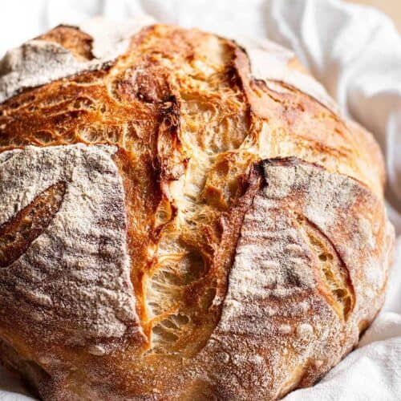

Sourdough Bread Recipe

Description
Turn your kitchen into a sourdough bread bakery with this easy recipe
and my sourdough starter recipe.
Making your own sourdough bread does take a while, but the amount of actual work is minimal
— and the finished loaf is spectacular!
Ingredients
- 100 grams active sourdough starter
- 394 grams bread flour
- 250 grams water
- 8 grams kosher salt
- 2 tablespoons rice flour, or as needed
Steps
- Gather all ingredients.
- Place starter into a bowl. Add bread flour, water, and salt; mix until well blended and sticky.
- Cover with aluminum foil and let stand for 4 hours at 70 to 75 degrees F (21 to 24 degrees C).
- Uncover dough and use wet hands to fold it over onto itself three to four times. Cover again with foil and let ferment for 2 more hours.
- Generously dust a proofing basket (banneton) with rice flour.
- Scrape dough out onto a lightly floured work surface. Shape into a ball with a smooth, unbroken surface, using just enough flour on the surface to keep it from sticking. Place dough into the prepared basket with the smooth side down. Pinch the rougher edges on the surface together toward the center to smooth them while maintaining a round ball shape.
- Cover and refrigerate for 12 hours to slow the fermentation process.
- Remove the banneton from the refrigerator. Let sit in a warm spot until dough springs back slowly and retains a slight indentation when poked gently with a finger, about 3 to 5 hours.
- Preheat the oven to 450 degrees F (230 degrees C). Line a rimmed baking sheet with parchment paper.
- Dust surface of dough with flour. Gently invert the banneton over the center of the baking sheet and flip dough out onto the parchment paper. Gently brush off excess rice flour. Score top of dough about 1/8-inch deep with a sharp knife to create a shallow slit running across the center. Mist the entire surface lightly with water.
- Transfer loaf to a wire rack and let cool completely before slicing.